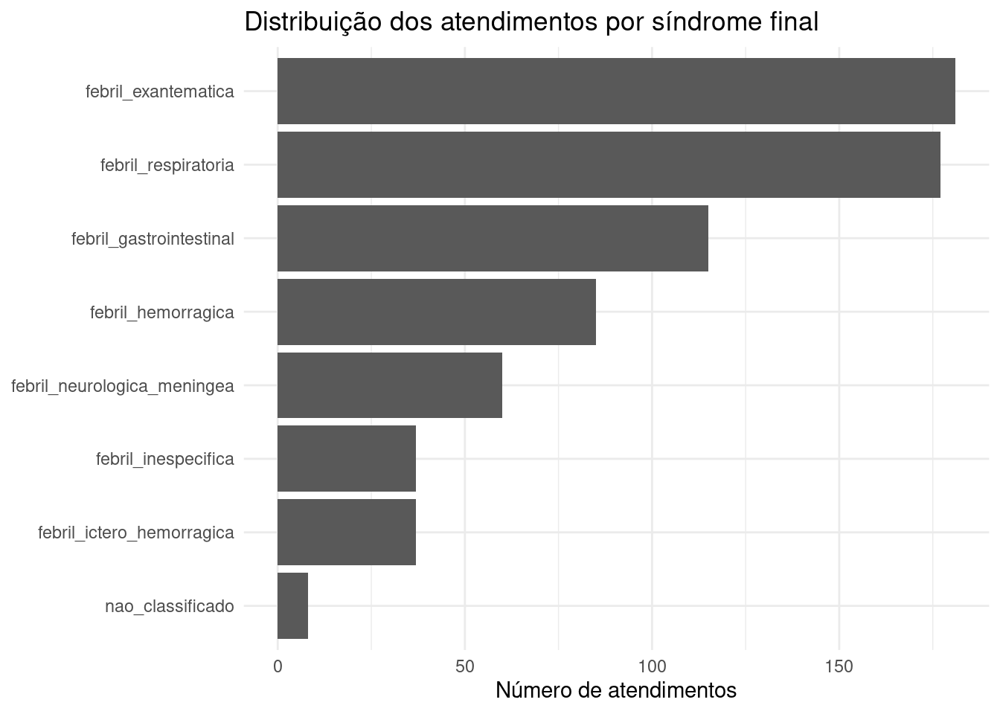
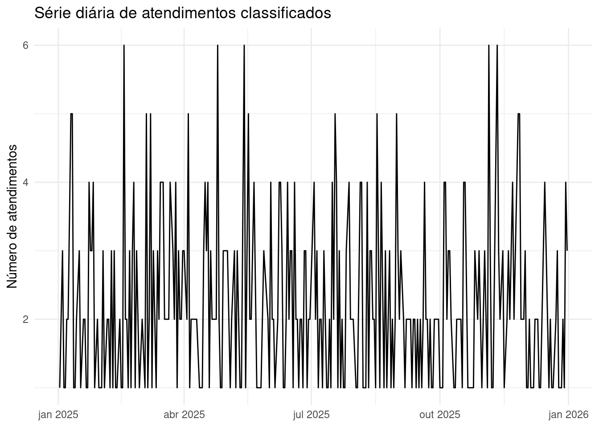
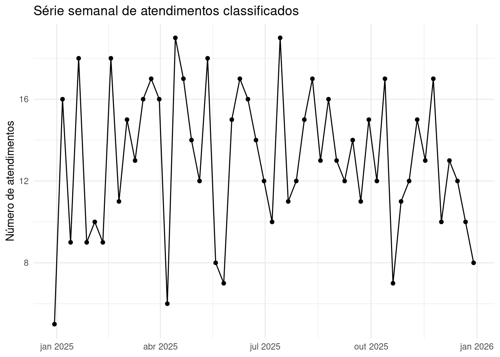
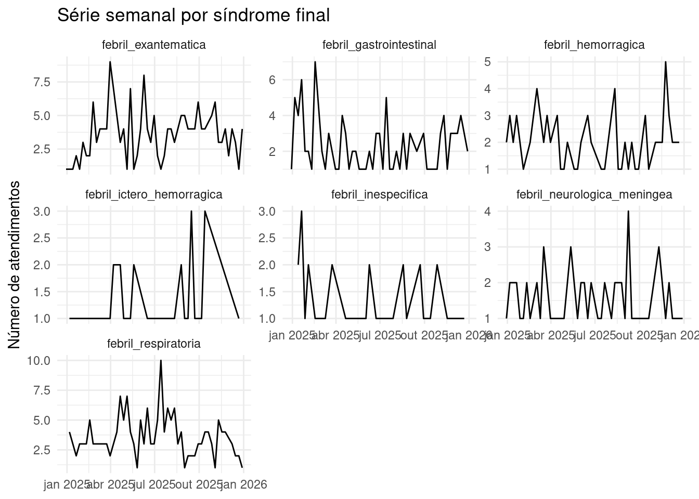
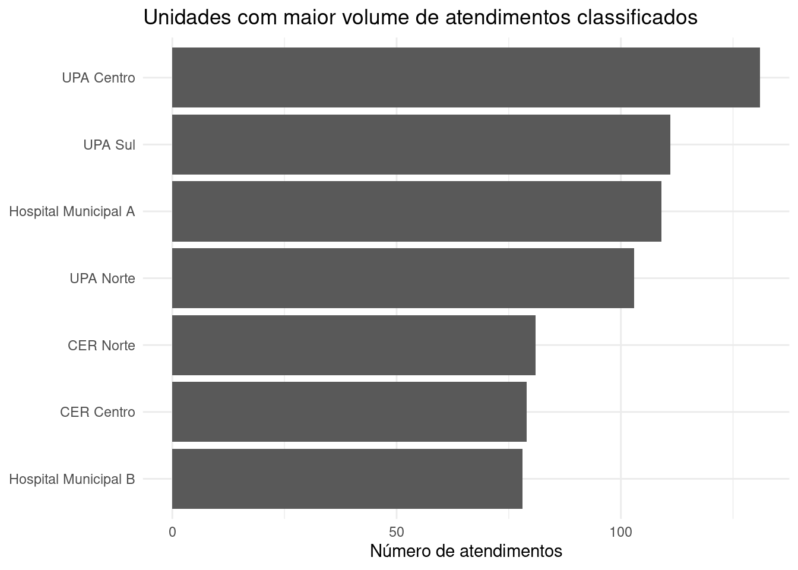

Ver código
source("R/00_pacotes.R")
source("R/04_duckdb.R")
source("R/11_series_historicas.R")source("R/00_pacotes.R")
source("R/04_duckdb.R")
source("R/11_series_historicas.R")Este capítulo transforma a classificação final em uma leitura temporal e operacional. A partir de uma síndrome final única por atendimento, é possível acompanhar a evolução diária, semanal e mensal dos registros classificados, bem como identificar semanas, unidades e síndromes com maior volume.
Nesta etapa, o foco ainda é descritivo. Não são aplicados modelos de detecção de anomalias, limiares estatísticos ou alertas automáticos. O objetivo é demonstrar como a base classificada pode alimentar rotinas de monitoramento temporal.
con <- connect_duckdb()
init_duckdb_schema(con)
classificacao_final <- read_classificacao_final(con)
list(
registros = nrow(classificacao_final),
colunas = ncol(classificacao_final)
)$registros
[1] 700
$colunas
[1] 42knitr::kable(
summarise_series_periodo(classificacao_final),
caption = "Resumo do período disponível para análise temporal"
)Warning: There was 1 warning in `dplyr::mutate()`.
ℹ In argument: `classificado_final = dplyr::case_when(...)`.
Caused by warning:
! Calling `case_when()` with size 1 LHS inputs and size >1 RHS inputs was
deprecated in dplyr 1.2.0.
ℹ This `case_when()` statement can result in subtle silent bugs and is very inefficient.
Please use a series of if statements instead:
```
# Previously
case_when(scalar_lhs1 ~ rhs1, scalar_lhs2 ~ rhs2, .default = default)
# Now
if (scalar_lhs1) {
rhs1
} else if (scalar_lhs2) {
rhs2
} else {
default
}
```| indicador | valor |
|---|---|
| Primeira data | 2025-01-02 |
| Última data | 2025-12-31 |
| Número de dias no período | 315 |
| Atendimentos totais | 700 |
| Atendimentos classificados | 692 |
| Atendimentos não classificados | 8 |
knitr::kable(
summarise_sindromes_final(classificacao_final),
caption = "Distribuição dos atendimentos segundo a síndrome final"
)| sindrome_final | n | percentual |
|---|---|---|
| febril_exantematica | 181 | 25.9 |
| febril_respiratoria | 177 | 25.3 |
| febril_gastrointestinal | 115 | 16.4 |
| febril_hemorragica | 85 | 12.1 |
| febril_neurologica_meningea | 60 | 8.6 |
| febril_ictero_hemorragica | 37 | 5.3 |
| febril_inespecifica | 37 | 5.3 |
| nao_classificado | 8 | 1.1 |
plot_distribuicao_sindromes_series(classificacao_final)
A série diária permite observar a variação do volume de atendimentos classificados ao longo do período. Em bases reais, essa visualização pode apoiar o acompanhamento de sazonalidade, eventos localizados, falhas de alimentação e mudanças abruptas no padrão de registros.
serie_diaria_total <- build_serie_diaria_total(classificacao_final)
knitr::kable(
serie_diaria_total |>
dplyr::slice_head(n = 15),
caption = "Primeiros dias da série diária de atendimentos classificados"
)| data_atendimento | n |
|---|---|
| 2025-01-02 | 1 |
| 2025-01-04 | 3 |
| 2025-01-05 | 1 |
| 2025-01-06 | 1 |
| 2025-01-07 | 2 |
| 2025-01-08 | 2 |
| 2025-01-10 | 5 |
| 2025-01-11 | 5 |
| 2025-01-12 | 1 |
| 2025-01-13 | 1 |
| 2025-01-14 | 2 |
| 2025-01-16 | 3 |
| 2025-01-17 | 1 |
| 2025-01-19 | 2 |
| 2025-01-20 | 2 |
plot_serie_diaria_total(classificacao_final)
A agregação semanal reduz oscilações de curto prazo e facilita a leitura operacional. Para vigilância sindrômica, a semana epidemiológica costuma ser uma unidade útil para relatórios de rotina.
serie_semanal_total <- build_serie_semanal_total(classificacao_final)
knitr::kable(
serie_semanal_total |>
dplyr::slice_head(n = 15),
caption = "Primeiras semanas da série semanal de atendimentos classificados"
)| semana_inicio | n |
|---|---|
| 2024-12-30 | 5 |
| 2025-01-06 | 16 |
| 2025-01-13 | 9 |
| 2025-01-20 | 18 |
| 2025-01-27 | 9 |
| 2025-02-03 | 10 |
| 2025-02-10 | 9 |
| 2025-02-17 | 18 |
| 2025-02-24 | 11 |
| 2025-03-03 | 15 |
| 2025-03-10 | 13 |
| 2025-03-17 | 16 |
| 2025-03-24 | 17 |
| 2025-03-31 | 16 |
| 2025-04-07 | 6 |
plot_serie_semanal_total(classificacao_final)
serie_semanal_sindrome <- build_serie_semanal(classificacao_final)
knitr::kable(
serie_semanal_sindrome |>
dplyr::slice_head(n = 20),
caption = "Exemplo da série semanal por síndrome final"
)| semana_inicio | sindrome_final | n |
|---|---|---|
| 2024-12-30 | febril_exantematica | 1 |
| 2024-12-30 | febril_gastrointestinal | 1 |
| 2024-12-30 | febril_hemorragica | 2 |
| 2024-12-30 | febril_neurologica_meningea | 1 |
| 2025-01-06 | febril_exantematica | 1 |
| 2025-01-06 | febril_gastrointestinal | 5 |
| 2025-01-06 | febril_hemorragica | 3 |
| 2025-01-06 | febril_ictero_hemorragica | 1 |
| 2025-01-06 | febril_neurologica_meningea | 2 |
| 2025-01-06 | febril_respiratoria | 4 |
| 2025-01-13 | febril_exantematica | 1 |
| 2025-01-13 | febril_gastrointestinal | 4 |
| 2025-01-13 | febril_hemorragica | 2 |
| 2025-01-13 | febril_inespecifica | 2 |
| 2025-01-20 | febril_exantematica | 2 |
| 2025-01-20 | febril_gastrointestinal | 6 |
| 2025-01-20 | febril_hemorragica | 3 |
| 2025-01-20 | febril_inespecifica | 3 |
| 2025-01-20 | febril_neurologica_meningea | 2 |
| 2025-01-20 | febril_respiratoria | 2 |
plot_serie_semanal_por_sindrome(classificacao_final)
knitr::kable(
summarise_semanas_maior_volume(classificacao_final, n = 10),
caption = "Semanas com maior volume de atendimentos classificados"
)| semana_inicio | n |
|---|---|
| 2025-04-14 | 19 |
| 2025-07-14 | 19 |
| 2025-01-20 | 18 |
| 2025-02-17 | 18 |
| 2025-05-12 | 18 |
| 2025-03-24 | 17 |
| 2025-04-21 | 17 |
| 2025-06-09 | 17 |
| 2025-08-11 | 17 |
| 2025-10-13 | 17 |
A leitura por unidade permite identificar concentração de registros em serviços específicos. Em uma base real, essa informação deve ser interpretada em conjunto com volume assistencial, perfil da unidade, cobertura territorial e completude do registro clínico.
knitr::kable(
summarise_unidades_maior_volume(classificacao_final, n = 15),
caption = "Unidades com maior volume de atendimentos classificados"
)| unidade | n | percentual |
|---|---|---|
| UPA Centro | 131 | 18.9 |
| UPA Sul | 111 | 16.0 |
| Hospital Municipal A | 109 | 15.8 |
| UPA Norte | 103 | 14.9 |
| CER Norte | 81 | 11.7 |
| CER Centro | 79 | 11.4 |
| Hospital Municipal B | 78 | 11.3 |
plot_unidades_maior_volume(classificacao_final, n = 15)
knitr::kable(
summarise_unidade_sindrome(classificacao_final, n_unidades = 10) |>
dplyr::slice_head(n = 40),
caption = "Distribuição das síndromes finais nas unidades com maior volume"
)| unidade | sindrome_final | n | percentual_unidade |
|---|---|---|---|
| CER Centro | febril_exantematica | 19 | 24.1 |
| CER Centro | febril_respiratoria | 16 | 20.3 |
| CER Centro | febril_gastrointestinal | 15 | 19.0 |
| CER Centro | febril_hemorragica | 13 | 16.5 |
| CER Centro | febril_neurologica_meningea | 8 | 10.1 |
| CER Centro | febril_inespecifica | 5 | 6.3 |
| CER Centro | febril_ictero_hemorragica | 3 | 3.8 |
| CER Norte | febril_exantematica | 27 | 33.3 |
| CER Norte | febril_respiratoria | 16 | 19.8 |
| CER Norte | febril_gastrointestinal | 13 | 16.0 |
| CER Norte | febril_hemorragica | 10 | 12.3 |
| CER Norte | febril_neurologica_meningea | 6 | 7.4 |
| CER Norte | febril_inespecifica | 5 | 6.2 |
| CER Norte | febril_ictero_hemorragica | 4 | 4.9 |
| Hospital Municipal A | febril_exantematica | 29 | 26.6 |
| Hospital Municipal A | febril_respiratoria | 27 | 24.8 |
| Hospital Municipal A | febril_gastrointestinal | 21 | 19.3 |
| Hospital Municipal A | febril_neurologica_meningea | 10 | 9.2 |
| Hospital Municipal A | febril_hemorragica | 9 | 8.3 |
| Hospital Municipal A | febril_ictero_hemorragica | 8 | 7.3 |
| Hospital Municipal A | febril_inespecifica | 5 | 4.6 |
| Hospital Municipal B | febril_respiratoria | 22 | 28.2 |
| Hospital Municipal B | febril_exantematica | 21 | 26.9 |
| Hospital Municipal B | febril_gastrointestinal | 13 | 16.7 |
| Hospital Municipal B | febril_hemorragica | 9 | 11.5 |
| Hospital Municipal B | febril_ictero_hemorragica | 7 | 9.0 |
| Hospital Municipal B | febril_inespecifica | 3 | 3.8 |
| Hospital Municipal B | febril_neurologica_meningea | 3 | 3.8 |
| UPA Centro | febril_respiratoria | 35 | 26.7 |
| UPA Centro | febril_exantematica | 34 | 26.0 |
| UPA Centro | febril_hemorragica | 18 | 13.7 |
| UPA Centro | febril_gastrointestinal | 17 | 13.0 |
| UPA Centro | febril_neurologica_meningea | 15 | 11.5 |
| UPA Centro | febril_inespecifica | 7 | 5.3 |
| UPA Centro | febril_ictero_hemorragica | 5 | 3.8 |
| UPA Norte | febril_respiratoria | 30 | 29.1 |
| UPA Norte | febril_exantematica | 23 | 22.3 |
| UPA Norte | febril_gastrointestinal | 18 | 17.5 |
| UPA Norte | febril_hemorragica | 8 | 7.8 |
| UPA Norte | febril_ictero_hemorragica | 8 | 7.8 |
As séries históricas demonstram como a classificação final pode ser transformada em uma camada de monitoramento. Em um cenário operacional, essas saídas podem ser usadas para acompanhamento semanal, painéis gerenciais, exportações automatizadas e seleção de recortes para auditoria.
Nesta versão do Quarto Book, a análise temporal é descritiva. O próximo passo metodológico pode incluir distribuição territorial, monitoramento por unidade, auditoria de registros divergentes ou detecção de anomalias temporais.
DBI::dbDisconnect(con, shutdown = TRUE)